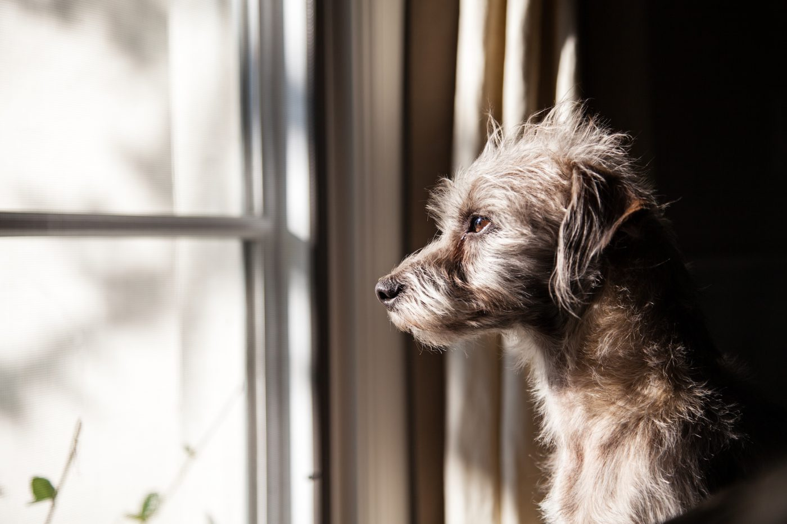

Ansiedad por separación
Noviembre 05, 2021 por Cristina

Si cuando sales de tu casa tu perro ladra, destroza cosas y araña las puertas, puedes estar frente a un típico caso de ansiedad por separación.
Pero… ¿Qué es la ansiedad por separación?
Como su propio nombre indica, la ansiedad por separación es un tipo de ansiedad que suele manifestarse en algunos perros cuando se separan de su dueño.
No te estreses, este tipo de comportamiento en los perros es común en toda clase de razas y afecta a un 15-20% de la población canina, sobre todo en dueños inseparables de sus mascotas.
Sintomatología
El perro puede mostrar tres síntomas principales:
- Conducta destructiva.
- Eliminación inadecuada.
- Vocalización excesiva.
Además de estos, en ocasiones, pueden manifestar otros síntomas como lamido de las extremidades, vómito o diarrea.
Diagnósticos
Para confirmar la existencia de un problema de ansiedad por separación, la historia clínica debe poner de manifiesto los siguientes hallazgos:
- Aparición de uno o más de los 3 síntomas principales.
- Estos síntomas deben aparecer en ausencia de sus dueños.
Pero… ¿Por qué sufre ansiedad por separación?
- Su naturaleza social: las reacciones de ansiedad ante la separación son muy frecuentes en las especies sociales como el perro (vida en grupo).
- Una excesiva dependencia (o exceso de apego) del perro hacia uno o varios de los miembros de la familia. Por ello, los síntomas de la ansiedad se manifiestan siempre cuando el propietario se encuentra ausente o en los momentos anteriores al abandono del domicilio.
- Algunos factores predisponentes, como el destete prematuro, la procedencia del animal y el manejo del propietario.
Tratamiento. ¿Qué puedo hacer?
Principalmente debes acudir a tu veterinario, él podrá ayudarte con un tratamiento basado en medidas que incluyen desde pautas generales en tu conducta hasta el uso de fármacos, nutracéuticos y feromonas. Algunos tratamientos comienzan en nuestro propio comportamiento.
¿Por qué se pierden los animales de compañía? ¿En qué condiciones sucede esto? ¿Quiénes se pierden más?
Noviembre 30, 2021 por Cristina

Se debe partir de la premisa de que en general en América Latina no existen datos ni números específicos que den cuenta de los casos reales.
A partir de un estudio en que el se siguieron273 casos durante un año, se concluye que 115 eran mestizos (42%), mientras 158
parecían o eran de raza (58%). Esto era sólo ilustrativo al principio, pero se volvió interesante con los resultados posteriores.
De estos animales, sólo 110 tenían placa de identificación, 113 sólo traían collar sin placa y 50 no traían ninguno.
En verdad tenemos que poner atención en ese aspecto tan sencillo y tan útil, sobre todo porque esta es la diferencia que hace una placa:
muchos, no prestamos tanta atención a un perro que no trae collar o correa, mientras no se vea lastimado, pues sabemos que no tenemos espacio
o recursos para atender a todos, así que nos concentramos en los más necesitados. Un perro que se ve sólo y ansioso, con placa de identificación,
es una alerta inmediata.
Ahora es importante saber en qué condiciones ocurrían los extravíos, la mayoría son descuidos basados en el exceso de confianza, en la TV
aparecen personas felices que corren por el parque con sus perros libres, y quizá queremos emularlos, pero eso sólo eleva el margen de riesgo de
perderlo. El porcentaje es muy elevado en esas condiciones: De los 140 que sí regresaron a casa, 90 eran mestizos (64%) mientras 50
eran de raza (36%). Esto puede responder a los escrúpulos de algunas personas y sus ganas de «quedárselo», cuando lo encontraron. No confíes en la frase
«ya regresará». Los números, al menos, no favorecen a esa idea:
¿Y cómo regresaron?
Aún hoy muchas personas abren la puerta y permiten que su perro salga a la calle sólo, para hacer sus necesidades, y regrese cuando quiera,
por otro lado sólo 38 casos fueron extravíos mientras «alguien más» lo paseaba o cuidaba, el resto, 235 casos (86%), ocurrieron ante la
responsabilidad del dueño más directo o íntimo.
Sólo 55 ocurrieron mientras pasaba algo anormal, como un accidente, una multitud, un escándalo o
una pelea, es decir, en condiciones «anormales». El resto, 218 casos (80%) ocurrieron en un día común, tranquilo, por lo que los dueños aceptaron
que se trató de un descuido de su parte.
¿Qué motivos los hicieron correr, alejarse y perderse? Aquí no hubo mucha diferencia:
49 salieron corriendo tras un gato, rata, ardilla u otros perros (21%)
54 se asustaron con un claxon, escape, gritos o fuegos artificiales (20%)
41 sencillamente empezaron a acelerar «sin razón» (18%)
46 se asustaron por otra persona que los provocó o los quiso alejar (17%)
44 sencillamente se perdieron de la vista (19%)
Los perros «únicos» parecen más propensos al extravío. Es la fuerza de cohesión que te otorga una manada. El sentido de pertenencia y de seguridad se
eleva mientras haya más miembros, así que la inseguridad al alejarse de la manada es mayor. Entre «hermanos» se cuidan, se ladran, se llaman y hasta
se «regañan». Finalmente, un perro que en todo el día no ve otros perros, se emocionará más al encontrar amigos caninos en la calle, por lo que la
reacción puedes ser más intensa. Una razón más para que abras la puerta a más de un peludo.
Las edades pueden no ser tan relevantes, pero al final son un factor interesante para que seas más cuidadoso durante cierto tiempo. Por supuesto, la edad te da sabiduría, así que
mientras más jóvenes e impetuosos, mayor riesgo:
147 tenían entre 6 meses y 3 años (54%)
123 tenían entre 3 y 8 años (45%)
3 tenían más de 8 años (1%)